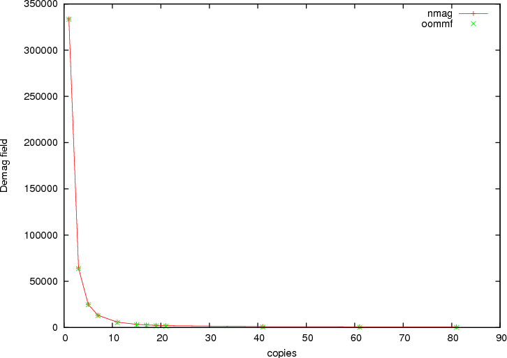
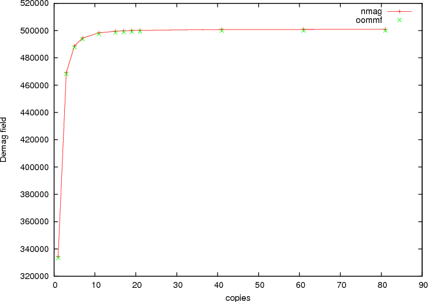

Concerning the simulation of periodic magnetic structures, there are a few somewhat subtle issues to be taken into account, both with respect to the demagnetising and the exchange field.
The issue with the exchange field is that we may encounter situations where the magnetic material crosses the boundary of an elementary cell: a periodic array of non-touching spheres in a cubic lattice is fundamentally different from its complement, a cubic lattice made of spherical holes, insofar as that in the latter case, it is impossible to do a simulation using periodic boundary conditions without identifying degrees of freedom that live on boundaries of the simulation cell. Nmag can deal with this automatically, provided the mesh file contains periodicity information, i.e. data on how to identify nodes on exterior faces.
As for the demagnetising field, the most important problem is that one cannot ignore the effect of the faraway boundaries of the system: a 100 nm x 100 nm x 100 nm cell made of magnetic material in the center of a large (three-dimensional) periodic array will experience very different demagnetising fields depending on the shape of the outer boundaries of this array. Assuming spatially constant magnetisation, if these cells form a “macroscopic” (tree-dimensional) sphere, H_demag will be -1/3 M, while for a flat box, H_demag may be very close to -M. Nmag takes these “macro-geometry” effects into account by allowing the user to provide a geometrical layout for a finite number (say, 100-1000) of cells that approximates the shape of the faraway outer boundary of the system.
The macro geometry approach is described in [1] which may serve as a more detailed instruction to the concept.
| [1] | Hans Fangohr, Giuliano Bordignon, Matteo Franchin, Andreas Knittel, Peter A. J. de Groot, Thomas Fischbacher. A new approach to (quasi) periodic boundary conditions in micromagnetics: the macro geometry, Journal of Applied Physics 105, 07D529 (2009), Online at http://link.aip.org/link/?JAP/105/07D529 |
In this example, we simulate a single cell in the middle of a long one-dimensional periodic array where for the purpose of computing the demagnetising field, we take three extra copies of this cell to the left and three copies to the right along the x axis. (For real applications, one would use more copies. The only effect of additional copies are to increase the setup time needed to compute an internal boundary/boundary interaction matrix.)
The next Example: 2D periodicity demonstrates the macro geometry concept for a thin film. This is followed by the Spin-waves example which includes exchange coupling between periodic copies (and is of more practical value).
The mesh of the central simulation cell used is described in cube.geo which reads:
algebraic3d
# prism
solid prism = orthobrick (-7.50, -7.50, -7.50; 7.50, 7.50, 7.50) -maxh = 1.8000;
tlo prism;
Note that the mesh is centered around the origin. This is recommended for periodic simulations. (We need to document this better.) The resulting mesh is this (the periodic copies are not shown):
The script periodic1.py reads:
import nmag
from nmag import SI
# define magnetic material
Py = nmag.MagMaterial(name="Py",
Ms=SI(1e6,"A/m"),
exchange_coupling=SI(13.0e-12, "J/m")
)
# size of simulation cell, plus extra spacing
# to avoid exchange interaction across interfaces
# between repeated copies of the simulation cell.
x_lattice = 15.01 # the spacing is 0.01
y_lattice = 0.0
z_lattice = 0.0
# list to store the lattice points where the periodic
# copies will be placed
lattice_points = []
for xi in range(-3,4):
lattice_points.append([xi*x_lattice,0.0*y_lattice,0.0*z_lattice])
# create data structure pbc for this macro geometry
pbc = nmag.SetLatticePoints(vectorlist=lattice_points, scalefactor=SI(1e-9,'m'))
#create simulation object, passing macro geometry data structure
sim = nmag.Simulation(periodic_bc=pbc.structure)
# load mesh
sim.load_mesh("cube1.nmesh.h5", [("repeated-cube-1D", Py)], unit_length=SI(1e-9,"m") )
# set initial magnetisation along the periodic axis
sim.set_m([1.0,0,0])
# compute the demagnetising field
sim.advance_time(SI(0,"s"))
# probe demag field at the centre of the cube, function
# returns an SI-Value ('siv')
H_demag = sim.probe_subfield_siv('H_demag', [0,0,0])
print "H_demag_x at centre of cube = ", H_demag[0]
print "H_demag_y at centre of cube = ", H_demag[1]
print "H_demag_z at centre of cube = ", H_demag[2]
Setup can be splitted into three steps. In the first step we set the x_lattice parameter to be slightly larger than the dimension of the unit cell (in order not to have any overlap between the cells) and set the y_lattice and z_lattice parameters to zero to indicate no periodidicity along these directions
x_lattice = 15.01 # the spacing is 0.01
y_lattice = 0.0
z_lattice = 0.0
In the second step we define the lattice points where we want the periodic copies to be:
for xi in range(-3,4):
lattice_points.append([xi*x_lattice,0.0*y_lattice,0.0*z_lattice])
and in the third step we define the object whose structure attribute will be used as the parameter in the definition of the simulation object
pbc = nmag.SetLatticePoints(vectorlist=lattice_points, scalefactor=SI(1e-9,'m'))
#create simulation object
sim = nmag.Simulation(periodic_bc=pbc.structure)
The remaining part of the script computes the demagnetisation field at the center of the cube. This calculation can be carried out for a varying number of copies of the simulation cell. The next figures show components of demagnetising field in the center of the cube as a function of the number of periodic copies. As in the code above, we impose an uniform magnetisation along the periodic x-axis. The first figure shows the demagnetisation field along the x-axis, and the second figure along the y-axis. In both figures, we have added green crosses that have been obtained by computing the demagfield using OOMMF (where in OOMMF we have actually made the simulation cell larger and larger to represent the growing number of periodic copies).
Demagnetising field as a function of the number of periodic copies with the magnetisation aligned along the periodic axis.
Demagnetising field as a function of the number of periodic copies with the magnetisation aligned along an axis orthogonal to the periodic one.